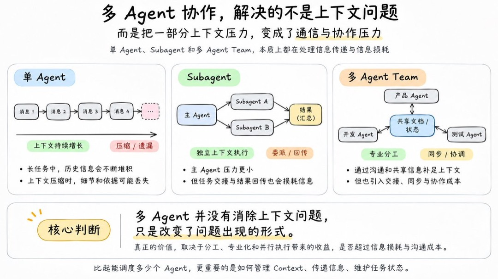
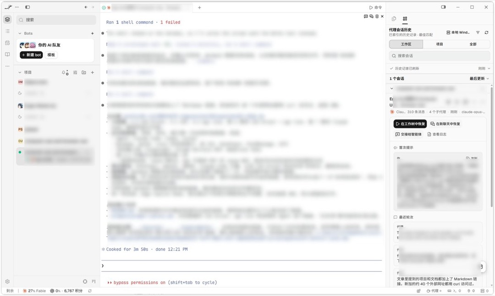
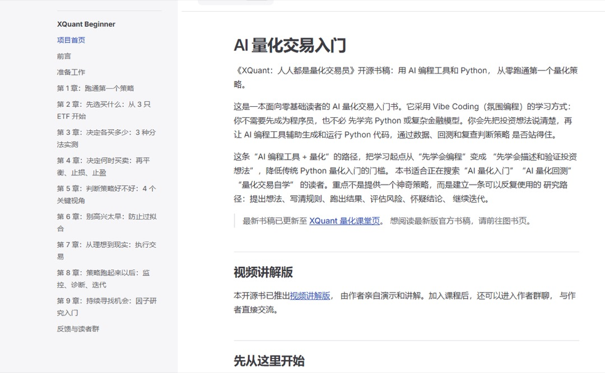
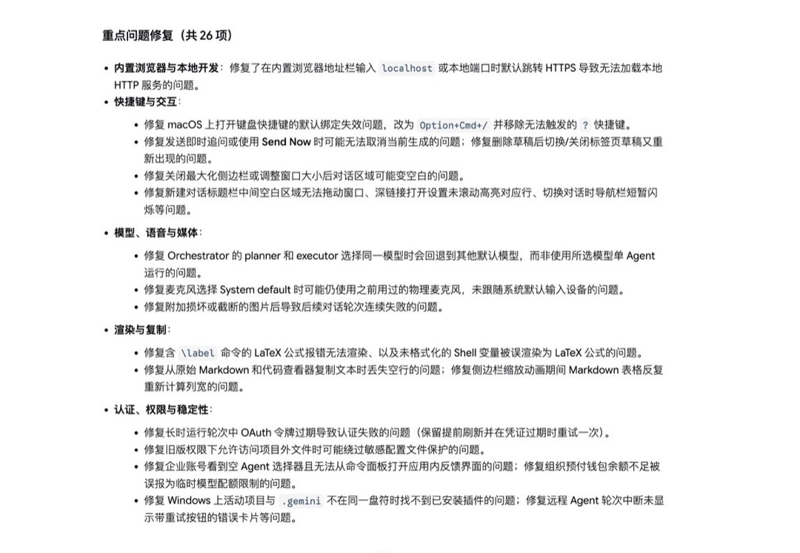

本期速览
01 多 Agent 协作的核心是信息流转成本
02 MCP 新增 Skills、异步任务与确认交互
05 16 行 Markdown 技能取代千行编排框架
01｜多 Agent 协作的核心是信息流转成本
来源（X） · @meow2149 · 2026-11-28 01:46
单 Agent、Subagent 和多 Agent Team，本质上都面临信息损耗的问题。
单 Agent 长时间执行任务时，随着上下文不断增长，难免会触发压缩，部分历史细节和决策依据也可能随之丢失。
Subagent 通过独立上下文执行子任务，缓解了主 Agent 的上下文压力，但任务委派和结果回传的过程，同样可能丢失关键信息。
多 Agent Team 进一步引入了独立会话、专业分工和持续通信。虽然可以通过主动沟通、共享文档等方式补充信息，但也增加了任务交接、状态同步和协调的成本。
仔细想想，三者面对的问题其实是相通的：
单 Agent，是信息在时间维度上的延续。
Subagent，是信息在父子 Agent 之间的传递。
多 Agent Team，是信息在多个独立 Agent 之间的传递与同步。
从单 Agent 到多 Agent，我们实际上是将一部分上下文管理压力，转化成了通信与协调压力。
只有当任务分工、专业化和并行执行带来的收益，超过信息损耗与协作成本时，多 Agent 协作才真正具备效率优势。
所以我认为，Agent 编排框架真正值得关注的，不是它能调度多少个 Agent，而是能否让信息在不同会话、不同 Agent 和不同任务阶段之间，准确、完整、低成本地流转。
Agent 数量决定了潜在的并行规模，而信息管理与协作机制，决定了这些并行能力最终能转化为多少实际生产力。
把多个 Agent 组织在一起只是起点，让它们真正高效协作，才是 Agent 编排工程的核心难题。

引用内容
meow @meow2149
最近在深度使用 OpenBot 的过程中，我一直在思考这个问题。
以前完成一个开发需求，我基本上只需要用 Codex。从梳理产品需求、编写 PRD，到代码开发、通过 Computer Use 调整页面、调用接口测试、Code Review，甚至是涉及多个系统、需要与其他研发同事反复联调的复杂需求，都可以顺畅地交给它来完成。
如果当前会话的上下文积累得太多，或者进入了一个相对独立的任务阶段，也不必硬塞在同一个窗口里，顶多再开一个全新的 Chat，用干净的上下文继续解决新问题。遇到复杂子任务，Codex 自己也会按需派发 Subagent 去并行处理，整体节奏非常连贯。
而换到 OpenBot 之后，我可以将这些工作拆开，分别交给产品 Agent、前端 Agent、后端 Agent 和测试 Agent，让它们组成一个相对完整的研发团队。
分工确实更明确了，但与此同时，也引入了非常直观的协作成本。
每个 Agent 都有相对独立的会话和上下文，虽然可以通过 Channel 进行沟通，但并不意味着它们共享完整的上下文。需求传递、信息同步、任务交接都需要额外的通信，一些隐含的业务细节和踩过的坑，很容易在转述和摘要过程中丢失；为了对齐同一件事，反复补充背景也会带来更多的 Token 消耗。
这让我想到一个很有意思的现象。
过去，软件研发被划分为前端、后端、测试等不同岗位。后来随着技术的发展，全栈开发逐渐流行起来，我们希望一个人能够独立完成更多工作，从而消灭跨岗位的沟通与协作内耗。
可到了 AI 时代，大模型本来已经具备了相当不错的全栈开发能力，我们却又开始把一个全栈 Agent 拆分成产品 Agent、前端 Agent、后端 Agent、测试 Agent，重新构建起一套类似人类的研发组织架构。
乍一看挺矛盾的，甚至有点像开倒车，但仔细想想，其实并不矛盾。
无论是人类走向全栈，还是 AI 走向分工，底层都在绕开当前执行单元的最大瓶颈。
人类卷全栈，是因为人脑之间的通信带宽太低、跨人沟通和排期协同的成本极高，而单个工程师一旦吃透业务，大脑里自带连贯的长期记忆；全栈是用便宜的内部记忆，换掉了昂贵的外部沟通。
AI 刚好相反。模型之间同步文本的成本相对可控，但单个上下文窗口的有效注意力非常脆弱，无关信息越堆越多，推理质量就会明显下滑。
换句话说，全栈解决的是能力边界的问题，而多 Agent 协作解决的是执行规模、注意力和资源分配的问题。人类的岗位分工，很大程度上受限于个人的知识、精力与时间；而 Agent 的角色分工，并不一定是因为它缺乏其他岗位的能力，更多是为了合理分配上下文、计算资源和任务职责。
具备完成所有工作的能力，和同时高效地完成所有工作，本身就是两件不同的事情。
抛开模拟人类公司架构的表象，多 Agent 协作真正有价值的地方，我认为主要有四个。
第一，并行执行。
当接口协议和任务边界足够明确时，前端开发、后端开发和测试用例编写可以同时进行，从线性串行真正走向并行，用更多的计算资源换取更短的交付时间。
第二，上下文隔离。
这是最直接的工程降噪。测试 Agent 不需要看前端调了二十轮样式的报错日志，不同 Agent 可以专注于各自的任务，避免大量无关代码、工具调用和测试日志污染上下文。这对于大型项目和长周期任务尤其重要。
第三，独立验证。
在同一个会话里让 Agent 写完代码再自己做 Review 和测试，很容易陷入既当运动员又当裁判的思维惯性，顺着刚才的解题思路默认逻辑没错，从而放过隐藏 Bug。让一个没有参与代码编写、上下文干净的 Agent 负责审查和测试，才能以相对独立的视角发现开发过程中忽略的问题。
第四，长期专业化。
不同 Agent 可以拥有各自的长期记忆、专属 Skills、最小权限的工具配置，甚至搭配不同的模型。更窄的工具面和更精简的指令，也能显著降低指令冲突和工具调用幻觉。对于长期运行的项目，各自沉淀下来的领域知识和项目经验，也是临时创建的 Subagent 不一定具备的优势。
但多 Agent 协作并不天然意味着更高的效率。
如果一个需求本身并不复杂，或者任务之间存在很强的依赖关系，需要频繁同步信息、反复修改接口，硬上一套固定分工的 Agent 团队，通信成本和额外 Token 很快就会把收益吃掉。这种场景下，一个掌握完整需求背景的全栈 Agent，往往更快、更稳、也更省 Token。
而且，上面提到的并行执行、上下文隔离和独立验证，其实通过 Codex 灵活开启全新会话、按需派发 Subagent 也能覆盖大半，并不一定非要提前组建一个固定的 Agent 团队。
所以相比死板的固定角色分工，我目前更倾向于动态的任务编排：
▪︎ 普通需求，由一个全栈 Agent 独立完成，上下文重了或进入新阶段，就灵活开启全新会话继续推进。
▪︎ 复杂需求，根据任务的依赖关系，按需派发用完即焚的 Subagent 并行处理、隔离噪音。
▪︎ 长期项目，再考虑组建拥有独立记忆、专业知识和明确职责的常驻 Agent 团队。
这几种方式并不冲突，甚至可以相互结合。常驻的 Agent 本身也可以具备全栈能力，并根据实际需求灵活调整自己的职责。
衡量多 Agent 协作是否高效，最终还是要看交付质量、完成时间和资源消耗，而不是团队里有多少个 Agent、拆出了多少种角色。
我也希望未来的 Agent 编排系统，能够充分利用 AI 本身的能力特点，而不是简单照搬人类的组织架构。
毕竟我们好不容易让 AI 具备了全栈能力，总不能最后又让它们把大量时间和 Token，花在开会、同步进度和跨部门沟通上吧。

02｜MCP 新增 Skills、异步任务与确认交互
来源（X） · @lanshu · 2026-11-27 18:08
我在大会上也推荐大家重视MCP，可以看到Anthropic 依然在优化这里！
以前 MCP 说白了就是给模型接 API——发个请求、干等返回、只能传文字，稍微复杂点的活都跑不顺。这次放出来的 4 个核心能力，最值得关注：
1）Skills over MCP（公测） 以前给工具写 description 很尴尬：写短了模型不会组合多步操作，写长了全塞进上下文直接爆掉；单独发 Skill 文件，用户又得装两套，接口一改就脱节。现在 MCP Server 可以把工具和对应的玩法/SOP 打包一起下发，用到才按需加载，服务端改了客户端自动同步，用户零配置。
2）Tasks（正式可用） 打破了原来 tool call 必须同步干等的限制。耗时长的活可以直接交给 Server 在后台异步跑，甚至允许 Server 内部自己跑一整套 Agent 循环，Claude 先继续干别的，跑完再回来取结果。比如 ZoomInfo 现在能直接在后台做深度客户调研，不用像以前那样靠人连发好几轮 prompt 接力。
3）Elicitation（正式可用） 这个对生产环境很关键。以前怕模型误删库、误花钱，只能靠写 prompt 祈祷，或者每次调用弹个冷冰冰的“允许/拒绝”。现在 Server 跑到高危步骤可以主动暂停，自己弹表单或链接让用户确认——比如 Supabase 建付费项目前让你核对费用、GitHub 删仓库前让你手敲一遍仓库名，确认完直接从断点接着跑。
4）File Uploads（即将上线） 以后可以直接给 MCP Server 传 PDF、表格、图片，而且文件不经过模型上下文窗口，走旁路直传。大文件终于不用先转成文本把 token 烧穿了。
简单说，MCP 已经不只是“模型调接口的标准”了，更像是在让 Claude 和外部服务按两个 Agent 的方式协作：能学方法、能派长活、中途能拉人确认、还能直接传文件。
而且这几个能力都进了开放的 MCP 规范，不是 Claude 独占。目前 Claude apps 和 Claude Code（v2.1.331+，Pro/Max/Ultra）已经可以直接测前三项了。
原文：https://claude.com/resources/articles/skills-over-mcp-tasks-and-more
03｜Orca 终端编排上手体验与取舍
来源（X） · @MoeDejavu · 2026-11-28 12:24
Orca的UI/UX 我感觉不是很好，特别是刚上手的时候，元素太多了
需要一段时间来熟悉，终端和智能体编排很好，会话和Worktree使用很顺手
Agent Hook 默认是关闭的了，这很好 @JinjingLiang
但是 Orca 设置菜单和层级太乱，前期需要一段时间适应，我最喜欢 Orca 的两个功能：
1. 将常用命令写成脚本，直接点击切换（不用每次指挥AI启动，因为2小时自动停止）
2. 这个Bot 很有趣
缺点：自带的 Orca Computer Use 不如 @trycua CUA Driver 做的好，所以我继续使用 CUA
浏览器方面继续使用 @ego_agent Ego Lite 的速度和性能非常出色
以及，我禁用了 CUA 的遥测（不清楚是否默认开启的）
Orca 的UI/UX 真的很需要优化，按钮、菜单层级、交互整体做的比较乱
其他，都很好！是时候离开 T3 Code了🥰

04｜XQuant 开源书用 AI 辅助学量化
来源（X） · @yiyirats · 2026-11-28 12:38
后来我塞给他一本白拿的开源书——《XQuant：人人都是量化交易员》，走的是 Vibe Coding 那套：Python 大可以先撂着，把投资的路子讲透，余下的甩给 AI 编程工具去敲代码、去跑回测。
它不兜售什么玄乎的招法，教的是能反复上手的研究套路：
1️⃣ 从 3 只 ETF 起步，跑通第一个策略
2️⃣ 做基准对比，评估收益和风险
3️⃣ 识别过拟合、数据泄露这些坑
每章都带着动手做，边学边把结果跑出来。想入量化的门、又不知从哪儿迈腿的，先啃它。
在线阅读：https://xingwudao.github.io/xquant-beginner/

05｜16 行 Markdown 技能取代千行编排框架
来源（X） · @KobinFlow · 2026-11-28 08:07
结果才一年多，他直接把整套东西删到只剩 16 行纯文本，塞进 Coding Agent 里盲测胜率干到 90%+。
现在还在手搓几千行编排框架、或者拿“AI 深度研究”当护城河的团队，看到这 16 行 Markdown 真的不会原地破防吗？
引用内容
Philipp Schmid @_philschmid
中文译文
我们为 Gemini 4 Neon 构建了一个实验性的深度研究技能，将编码代理转变为研究人员 🚀
该技能的重点：
1. 范围：简单直接，宽泛的拆分为 3-5 个角度
2. 子代理：并行搜索或浏览器，上限 8-12 步
3. 来源：原始文件和 PDF，不使用搜索摘要
4. 速度：取消停滞的工作者，最多 1 次跟进
5. 报告：2 句话总结，内联链接，注明冲突
它只有 16 行，在数百次盲测中，相比不使用技能，有超过 90% 的情况下更受青睐。
原文
We built an experimental deep research skill for Gemini 4 Neon, turning coding agents into researchers 🚀
What the skill focuses on:
1. Scope: simple direct, broad ones in 3-5 angles
2. Subagents: parallel search or browser, 8-12 step cap
3. Sources: primary filings and PDFs, no search snippets
4. Speed: cancel stalled workers, max 1 follow-up
5. Report: 2-sentence summary, inline links, conflicts noted
It's 16 lines, preferred over 90% of the time vs no skill in hundreds of blind evals.
06｜Antigravity 更新暴露产品维护长尾
来源（X） · @antiAIvo · 2026-11-28 09:19
外界总觉得 DeepMind 这种团队里的工程师
每天都在搞什么极其前沿、高不可攀的东西
但你仔细翻一下它的更新记录
13 项改进、26 个修复，全是各种缝缝补补的小问题：
什么浏览器输入 localhost 默认跳 HTTPS 了、
复制代码丢空行了、侧边栏关闭偶尔白屏了、不同盘符找不到插件了……
而且里面一大半功能普通人根本用不到
这也就是为什么这些互联网大厂动辄都有几十万员工的原因了
普通用户每天高频用到的可能就那两三个核心功能
但一个庞大产品背后，其实有几百个细碎的小角落
每天都在运转、都在出各种奇奇怪怪的边界 bug
你不用不代表没人用，只要有人在用
就得有一堆工程师天天在那儿修、在那儿维护

07｜八个代码生成视频的 GitHub 项目
来源（X） · @HeLi8866 · 2026-11-28 13:48
1、CineCode（3.1K Star🌟）
只需要描述你的创意，AI 就能帮你编写剧本、搭建场景、设计镜头运动、制作音效，最终渲染成 MP4 视频。
还支持通过 Three.js 构建 3D 场景，适合制作创意短片、广告和科普动画。
https://github.com/sarpstar/cinecode
2、Every Frame is Code（32 Star🌟）
这个项目的思路非常有意思：视频里的每一帧都由代码生成。
利用 Canvas、WebGL、Three.js 和 GLSL，将 3D 场景、粒子特效、电影级转场和动态视觉效果逐帧渲染为 MP4。
支持 Claude Code、Codex 等 AI 编程工具。
https://github.com/kiselas/every-frame-is-code
3、Video Shotcraft（23K Star🌟）
专门为 Claude Code 和 Codex 打造的产品宣传片制作 Skill。
内置 124 套镜头设计方案、150 个动态效果预览，支持 2.5D 运镜、音乐卡点、电影级音效，还能导出剪映工程。
做产品演示、商业广告、APP 宣传片，优先研究这个。
https://github.com/Vincentwei1021/video-shotcraft
4、Marketing Videos（14 Star🌟）
一套专门用于制作电影感产品发布视频的工作流。
将 Claude Code、Remotion 与 AI 视频生成工具结合，实现素材生成、动态设计、镜头编排和广告片制作。
https://github.com/sub-level/marketing-videos
5、Cinematic Video Skill（1 Star🌟）
别看 Star 少，这个项目的玩法很有意思。
只需提供一个主题，就能借助 Remotion 制作具有电影叙事感的动态视频，支持原创音乐合成、画面布局检查和自动渲染。
适合企业发展史、品牌故事、纪录片式动画和知识科普视频。
https://github.com/mylxsw/cinematic-video-skill
6、Video Motion Craft（5 Star🌟）
基于 Claude Code、Remotion 和 FFmpeg 的视频创作与剪辑工作流。
整合了多个现有视频制作 Skill，涵盖场景转场、动态设计、音乐卡点、字幕生成、素材剪辑和成片导出。
https://github.com/vibegameengine/video-motion-craft
7、Motion Lab（2 Star🌟）
一个纯代码视频创作实验室，整合了 Remotion、Three.js、GSAP 和 Motion Canvas。
适合研究 3D 镜头运动、解说动画、品牌宣传视频和各种动态视觉特效。
https://github.com/berlinify/motion-lab
8、ESCAPEMENT（193 Star🌟）
特意把这个放在最后，因为它的成片效果确实很惊艳。
开发者利用 Claude Code（Opus 5.5）和 Blender，制作了一部时长 36 秒的电影级超跑短片。
・3D 模型 ・材质纹理 ・场景灯光 ・镜头运动 ・渲染剪辑
全部通过代码实现，甚至没有下载任何现成的 3D 模型和图片纹理。
它并不是一个通用的视频生成工具，而是一部完整短片的工程源码，可以直接参考它的代码和制作流程。
https://github.com/Leonxlnx/escapement
这 8 个项目走的是两条不同的技术路线：
一种是通过代码直接生成每一帧画面，另一种是利用代码对 AI 生成的素材进行编排和剪辑。
尤其是动画、产品宣传片、科普视频和风格化短片这些领域，代码生成视频有望大幅降低制作成本，而且还能反复修改，不用每次都重新抽卡。